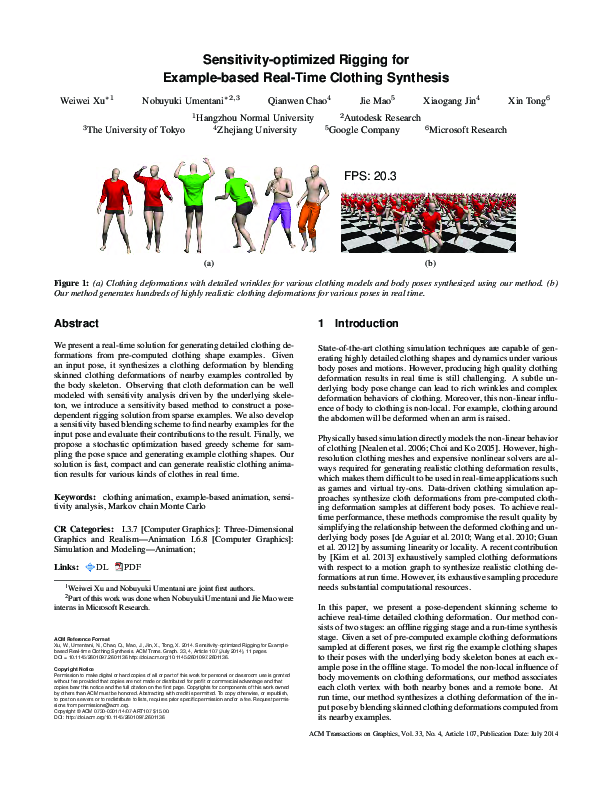

< Index
Sensitivity-optimized Rigging for Example-based Real-time Clothing Synthesis
Weiwei
Xu
Nobuyuki
Umentani
Qianwen
Chao
Jie
Mao
Xiaogang
Jin
Xin
Tong
SIGGRAPH 2014
ACM
preprint
Project page
DOI Metadata

Informations
Paper topic
: Animation
Able to run a replicability test
: No
Google Scholar Citation
(19/01/2020): 35
Reviewer
: 3
We haven't found any source code from the authors.
Download complete data for this entry